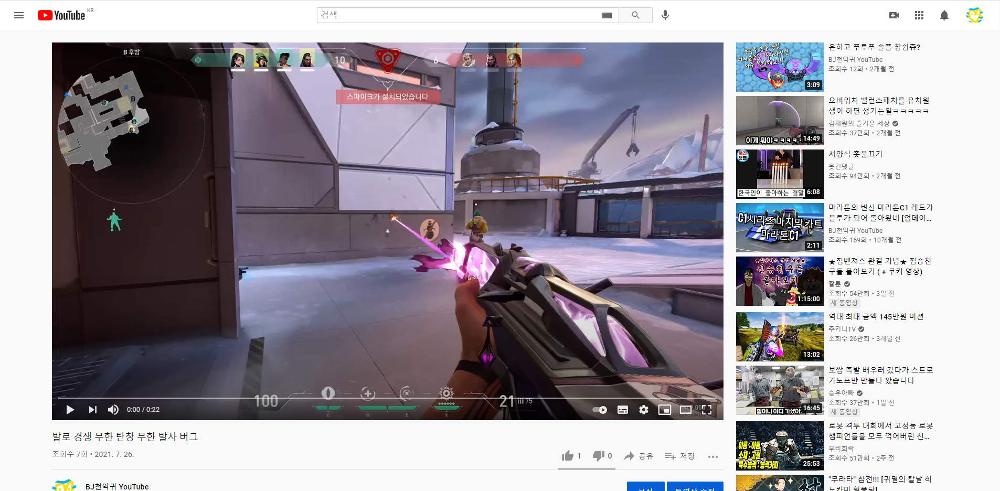

유튜브란 무엇인가
-
유튜브의 정의
-
유튜브의 특징
-
유튜브 역사
-
유튜브 사건사고
1.유튜브의 정의
유튜브는 구글(google) 에서 운영하는 무료 동영상 스트리밍 플랫폼이다
2.유튜브의 특징
2-1. 유튜브의 ui
유튜브의 ui는 기본적으로 조회수 좋아요 싫어요 shots 다음동영상 댓글 채널주인 구독 구독자 수 등이 있다

2-2. 유튜버 수입
유튜버 수입은 동영상 약 CPM*일일조회수 이며
CPM이란 1000회 노출당 가격 이다
2-3. 유튜버 랭킹
T-series가 현재 1등이다 더 많은 순위를 알고싶다면
3. 유튜브 역사
2005년 2월에 페이팔 직원이었던 채드 헐리, 스티브 천, 자베드 카림(퇴사)이 공동으로 창립했으며, 2005년 4월 23일에 최초 영상(Me at the zoo)이 업로드되면서 본격적인 서비스를 시작했고 2006년 10월 16억 5천만 달러의 가격으로 구글에 인수되었다
4. 유튜브 사건사고
서버오류 관련 사건사고가 제일 많다 더 자세히 알고싶다면
홈으로 바로가기